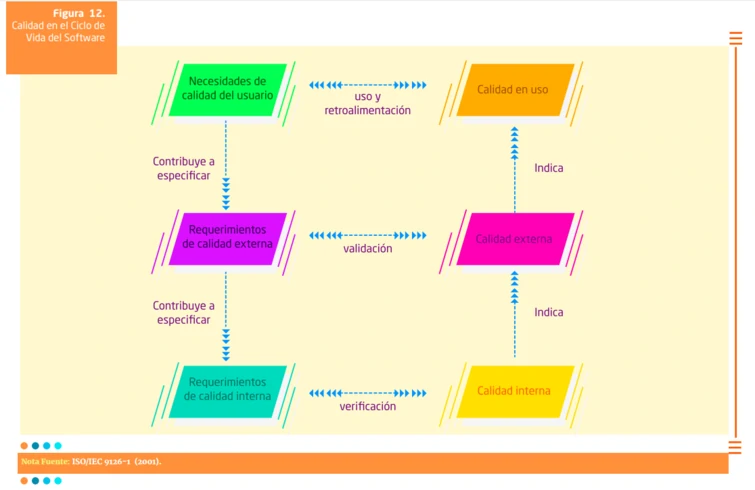

METODO ISO
Donde surgió?
fue elaborada por el SC 7, Ingeniería del Software y Sistemas del Comité Técnico Conjunto ISO/IEC JTC 1, Tecnología de la Información.
¿QUE ES?
Sirve para la evaluación del software, muestra un listado de características de calidad del programa al evaluar y lo que se debe tener en cuenta al ser este empleado.
El estándar ISO 9126, fue formulado inicialmente en 1991, donde se establece un modelo de calidad y su uso como marco para la evaluación del software. Aquí se distingue entre calidad interna y calidad externa, y se introduce el concepto de calidad en uso, este planteamiento cubre las necesidades de los usuarios, de los desarrolladores y de los mismos productos.
Durante los últimos 30 años, se han realizado diversas investigaciones a diversos modelos para la caracterización de la calidad del producto software, lo cual le ha permitido ser una de las normas ISO más reconocidas.
Objetivo
Proponer un modelo de calidad que sirva como elemento central en un proceso de evaluación.
Es muy interesante que esta norma puede aplicarse a cualquier tipo de software, incluso al desarrollado para el ámbito educativo, que es el que más nos interesa.

métricas
Las métricas externas: para medir las características de calidad del software en las etapas finales del ciclo de vida del producto. Proponen una escala cuantitativa y una forma de medir las características dinámicas del código cuando se ejecuta en una computadora o en el entorno requerido.
Las métricas internas: Se utilizan en la medición de las características de la calidad del software en las etapas tempranas del proceso del desarrollo o su ciclo de vida. La calidad interna se mide en el proceso de desarrollo del producto, se establecen unas métricas internas con su escala cuantitativa y una forma de medir dichas características.
Métricas de calidad de uso: Aquí la idea es permitir visibilizar la interrelación entre el usuario y el producto desde la óptica de la eficiencia y la satisfacción.
Características de calidad de un software según la ISO/IEC 9126
-
Funcionalidad: se evalúa la adecuación, el cumplimiento funcional, idoneidad, corrección, interoperabilidad, conformidad y seguridad de acceso. Por lo que es posible afirmar que la funcionalidad determina la capacidad del software de funcionar en términos de lo que el usuario necesita, de interactuar con otros sistemas y que permita el acceso de diferentes personas pero que cumpla con las regulaciones de las leyes de protección de datos.
-
Confiabilidad: se tienen en cuenta aspectos como la capacidad y facilidad de recuperación, la mitigación de fallos, cantidad de tiempo que el software está disponible para su uso y la tolerancia. Por lo que esto tiene en cuenta todo lo relacionado a los fallos que podría dar el producto de software.
-
Usabilidad: mide el grado en que el software es fácil de usar, qué tan intuitivo es, el manejo que el usuario le da al sistema y si este presenta menús sencillos, lectura de textos ágil, cuenta con funciones de forma clara y puntual, entre otros.
-
Eficiencia: analiza y mide la capacidad en que el software hace óptimo el uso de los recursos del sistema, en términos de tiempo de uso y recursos de los cuales dispone.
-
Facilidad de mantenimiento: la facilidad con que una modificación puede ser realizada, la capacidad para hacerle pruebas de rendimiento, regresión, accesibilidad, inspección de código y toda la ingeniería de requerimientos. Esto hace que el producto de software sea escalable ya que es posible hacerle mejoras constantes sin que este no tenga ningún problema al querer realizarle alguna modificación o incorporación.
-
Portabilidad: la facilidad con que el software puede ser llevado de un entorno a otro. Proporciona facilidad de instalación, facilidad de ajuste, facilidad de adaptación al cambio y otros aspectos que lo hacen un sistema que garantiza portabilidad.
-
Satisfacción: se tiene en cuenta el cumplimiento de todos los requerimientos para los que fue desarrollado el software, basado en las expectativas del cliente final. Estas expectativas se definen de acuerdo con las necesidades, y estas se basan en la eficiencia y efectividad en coherencia para lo que fue hecho el producto.